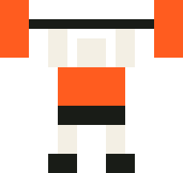

Every conversation drags months of dead weight along, and when the memory lapses, the whole pile gets re-read at full price. sweap.it weighs your AI's memory, puts it on a diet, and keeps it off. Local-only. Reversible. Zero dependencies.
caveman makes your AI talk less. jev makes your AI think faster.
gstack makes your AI a team. sweap.it makes your AI weigh less.
Not a cleaner you run once: a trainer that stays. Everything runs on your machine, reads your AI's own memory, and reverses with proof.
One command reads your AI's memory and prints the slip: dead weight, duplicate
thinking, resting tool exhaust. --dry-run measures and touches nothing.
Thirty seconds, your numbers.
sweap.it finds and cleans the dead weight, reversibly. Every row is backed up and hash-verified before anything moves, and one command puts every byte back. A rehearsal on a copy runs first. Nothing deletes on faith.
The trainer watches the scale daily. Quiet days say nothing. When junk creeps back it flags you: "Junk is creeping back, up 8.3 MB since Monday. One command: sweap diet." It finds and cleans. It does not pretend to prevent.
After every memory lapse, your AI re-reads the whole pile. Re-read tokens bill at the cache-miss rate instead of the cache-hit rate. That gap is the carrying charge, and it is arithmetic on list prices, not a prediction.
Junk tokens that should have been cache hits at $0.11/M get re-read at the miss rate of $0.60/M. Your junk rides along and pays full fare every time your AI forgets.
| Your pile | per lapse | weekly |
|---|---|---|
| 5 MB junk | $2.06 | ~$8/mo |
| 20 MB junk | $8.23 | ~$33/mo |
| 50 MB junk | $20.58 | ~$82/mo |
Every figure is measured, dated, and reproducible from the tool. Run the weigh-in and set your own.

Thirty seconds, read-only, your own data. You cannot break anything by looking. That one is on the gym rules board.
Run the weigh-in